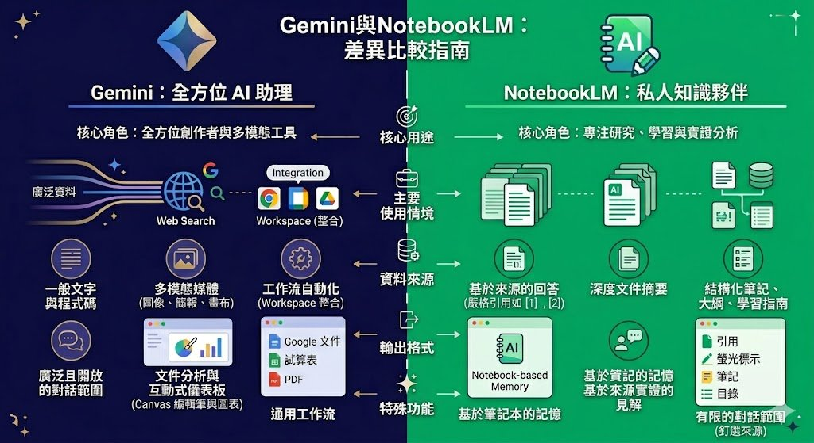

TEACHER WORKSHOP · AI TOOLS
AI 之間互相合作
Gemini × NotebookLM 神連動
🍎 教師研習版 · 五大教學情境實作
蘇澳國小 · 115年6月3日

講師介紹
ABOUT THE INSTRUCTOR
許凱琳 老師
新北市大豐國小 自然教師
- 🏆 榮獲115年新北市特殊優良教師
- 🏆 榮獲112年新北市 Super師獎
- 🌟 教育部數位學習推動優良案佳作
- ✅ Gemini 認證講師
- ✅ Apple Learning Coach & APLS
- ✅ 教育部B5-1生成式AI工作坊合格講師
你希望AI在教學上可以幫你到什麼程度？
輸入你的想法
熱門回答 LIVE
輸入第一個想法
文字雲就會出現 ✨
總提交：0 | 不同回答：0


TODAY'S AGENDA
這堂課要學什麼？
-
1
AI 可以互相合作
NotebookLM × Gemini 各司其職
-
2
五大教學情境實作
行政 / 導師 / 自然 / 社會 / 體育
-
3
成果上傳 Padlet 分享
帶走你的 AI 作品
👉 AI 不只是聊天，而是開始一起工作
COMPARISON
NotebookLM × Gemini 差異比較



🔑 核心概念
NotebookLM 負責記憶
Gemini 負責做事
兩個 AI 各司其職，搭配使用，效果翻倍
👨🏫 老師的知識庫 + AI 的執行力 = 你的超級助教
WORKFLOW
神連動 SOP — 四步驟

CHOOSE YOUR SCENARIO
五大教學情境選擇
📋
01
行政老師
課程計畫書製作
課程計畫書製作
💌
02
班導師
家長溝通助手
家長溝通助手
🔬
03
自然科老師
素養題出題工具
素養題出題工具
🗺️
04
社會科老師
議題探究課設計
議題探究課設計
🏃
05
體育老師
體適能教學計畫
體適能教學計畫
💡 每個情境都包含完整四步驟，現場可直接跟著操作！
📋
情境 01 · 行政老師
課程計畫書製作
| 步驟 | 工具 | 你要做什麼 |
|---|---|---|
| ① | NotebookLM |
現場直接貼入網址： · 教育部國民小學課程綱要官網 · 學校官網的校務計畫頁面 · Google 搜尋「108課綱課程計畫範本」找到的範例頁面 💡 日後可上傳：去年課程計畫書 PDF、學校願景文件
|
| ② | Gemini | 提示語：「請根據這份知識庫，幫我更新今年的課程計畫書，加入 AI 融入教學的說明，並對齊 108課綱素養目標」 |
| ③ | Canvas | 排版成可直接送審格式（分點說明、表格對齊） |
| ④ | Gem | 建立「課程計畫助手」，每次修改計畫書直接對話，不需重新上傳資料 |
💌
情境 02 · 班導師（高年級）
家長溝通助手
| 步驟 | 工具 | 你要做什麼 |
|---|---|---|
| ① | NotebookLM |
現場直接貼入網址： · 教育部《校園霸凌防制準則》官方說明頁 · 搜尋「親師溝通技巧」找到的教育期刊文章 · 新北市教育局「親師合作」相關說明頁 💡 日後可上傳：班規、生活公約、學期活動表、常用家長聯絡範本
|
| ② | Gemini | 提示語：「今天有學生在班上發生衝突，對方家長明天會來，請幫我草擬一份給雙方家長的 Line 訊息，語氣要中立、有誠意」 |
| ③ | Canvas | 排版成正式家長聯絡書格式（含日期、事件說明、後續處置、老師署名） |
| ④ | Gem | 建立「班導師溝通助手」，隨時輸入事件 → 秒出訊息草稿 |
🔬
情境 03 · 自然科老師
素養題出題工具
| 步驟 | 工具 | 你要做什麼 |
|---|---|---|
| ① | NotebookLM |
現場直接貼入網址： · 翰林／康軒出版社官網線上教材公開預覽頁 · 教育部自然科課綱說明頁 · 國教院「素養導向命題示例」PDF 連結 💡 日後可上傳：教科書章節 PDF、歷年試題、雙向細目分析表
|
| ② | Gemini | 提示語：「請依照 Bloom 認知層次，從記憶到評鑑，幫我出一份包含素養導向題組的六年級自然科期中考卷，共 100 分」 |
| ③ | Canvas | 排版成標準試卷格式，含題號、作答欄、配分標示，可直接列印 |
| ④ | Gem | 建立「自然科出題助手」，下次換單元只要說「換第三單元、出 50 分」就能快速出卷 |
🗺️
情境 04 · 社會科老師
議題探究課設計
| 步驟 | 工具 | 你要做什麼 |
|---|---|---|
| ① | NotebookLM |
現場直接貼入網址： · 公視新聞或天下雜誌相關議題報導（如：水資源、氣候、城鄉差距） · 維基百科對應議題中文條目頁面 · 國教院或教育部議題融入課綱說明頁 💡 日後可上傳：自選新聞報導、地圖資料、政策說明文件
|
| ② | Gemini | 提示語：「請幫我設計一份適合五年級的 PBL 探究任務單，主題是台灣水資源分布，包含核心問題、任務分工、探究步驟與評量規準」 |
| ③ | Canvas | 排版成可發給學生的任務單，含引導問題、小組分工表、成果呈現說明 |
| ④ | Gem | 建立「議題探究查詢助手」，學生在探究過程中直接向 Gem 提問，取代漫無目的 Google 搜尋 |
🏃
情境 05 · 體育老師
體適能教學計畫
| 步驟 | 工具 | 你要做什麼 |
|---|---|---|
| ① | NotebookLM |
現場直接貼入網址： · 教育部體育署「學生體適能常模」官方說明頁 · 體育署「FIT 台灣」體適能教學資源網 · 搜尋「國小體育教學計畫範本」找到的學校公開範例 💡 日後可上傳：班級體測紀錄 Excel、學期課程目標文件
|
| ② | Gemini | 提示語：「根據體適能常模，幫我找出小學高年級常見的體能弱項，並設計一份 18 週的學期體育課程進度表，融入核心素養目標」 |
| ③ | Canvas | 製作一頁式家長說明單，說明本學期體育課方向與孩子在家可配合的運動建議 |
| ④ | Gem | 建立「體能課程助手」，輸入任何體能項目 → 秒出暖身設計、教學遊戲、評量方式 |
ASSIGNMENT
作業說明 ✍️
📋 今天的作業
完成任一情境的實作截圖，或上傳你製作的 GEM 專家連結，上傳至 Padlet。
上傳格式
① 說明你上傳的內容是什麼情境？
② 你想在哪一個教學場合中使用？
截圖方式
電腦：Win + Shift + S
TODAY'S ACHIEVEMENT
🔥 今天你完成了！
📥
步驟 ①
NotebookLM
建立教學知識庫
→
⚡
步驟 ②
Gemini
神連動企劃生成
→
🎨
步驟 ③
Canvas
一頁式視覺排版
→
🤖
步驟 ④
Gem
專屬AI助手上線
👉 AI 開始從「聊天工具」變成你的「教學工作流」

謝謝
讓 AI 成為你的神隊友 🤝
蘇澳國小教師研習 · 115年6月3日 · 許凱琳老師